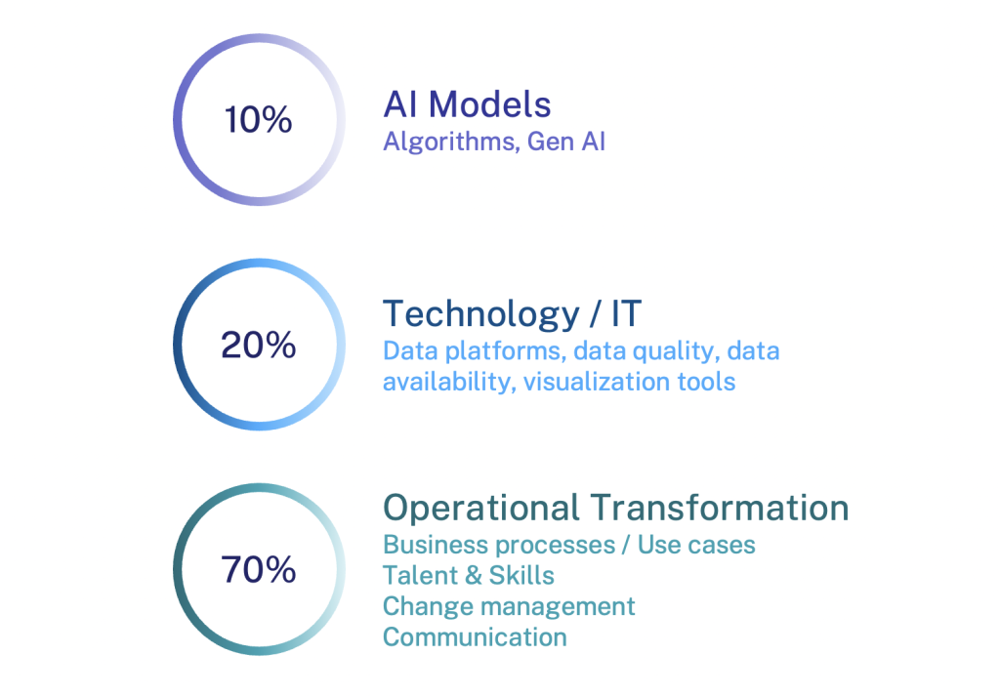

出典: Consortium for Service Innovation, Knowledge-Powered AI — ページにクリエイティブ・コモンズの表示なし（© Consortium for Service Innovation）。原文を日本語に翻訳したもの
元のページ:
Consortiumのメンバーは、ナレッジを動力とするAIの機能の活用で最前線にいる。
図：「AI Powered by Knowledge（ナレッジを動力とするAI）」のロゴ。白抜きの画像なので、白い背景では見えない。
AIの成果の良し悪しは、AIが引き出すナレッジの良し悪しで決まる。AIをうまく拡大するには、信頼できるコンテンツ、一貫した構造、キュレーションと再利用のための明確なワークフローが必要である。KCSを実践してきた組織は、AIの力を活かすうえで独自の有利な立場にある。
Consortiumのメンバーは、ナレッジマネジメントの実践に加えて、明確な目的を定めること、事業部門の賛同を得ること、適切な資源を確保することも成功に必要だと結論付けている。
AIのテクノロジーが組織に何をもたらしうるかという華やかな面に目を向けたくなるが、Boston Consulting Group の調査結果は、AIの導入を成功させるには、AIモデルに10%、テクノロジーに20%、業務の変革に70%の比重を置くことが重要だと示している。
データとテクノロジーも重要だが、成功にとって最も決定的な要因は業務の変革である。

図：AI導入の成功に向けた比重（Boston Consulting Group）。AIモデル（アルゴリズム、生成AI）10%、テクノロジー／IT（データ基盤、データの質と入手しやすさ、可視化ツール）20%、業務の変革（業務プロセス／ユースケース、人材とスキル、チェンジマネジメント、コミュニケーション）70%。
これは、体系的なAIの導入を進めてきたConsortiumのメンバーの経験とも一致する。私たちが学んできたことの詳細は次のとおり。
私たちは、メンバー企業やその他の業界団体の業務上の経験に基づいて、構造化された取り組み方を提供し、ベストプラクティスを共有することで、組織がAIの誇大な宣伝から現実へと移るのを助けている。
YouTube で「The AI Landscape | Part 2 of 2 | Where We Are Going」を見る
これは2部構成の第2部である。第1部はこちら – The AI Landscape: Where We Have Been
Consortiumのメンバーは、業務プロセス、利用場面、業務の変革に焦点を当てた、よく考えられたAI導入の取り組みを続けている。会話に加わろう。
Consortiumのメンバーでログインに助けが必要な場合は、support@serviceinnovation.org に連絡すること。
KCS^(®)の方法論は、Consortium for Service Innovation のサービスマークである。
文書でKCSに初めて言及するときは、上付きの^(®)を付けなければならない。また、次の文を脚注または括弧書きで添えること：「KCS® is a service mark of the Consortium for Service Innovation^(TM).」
KCSは形容詞として使うのが正しい。例えば「[会社名] は KCS® の方法論を支持している……」のように使う。
Consortium for Service Innovation の書面による明示的な許可なく、KCSを提供物の名称に使うことはできない。質問は Consortium へ問い合わせる こと。